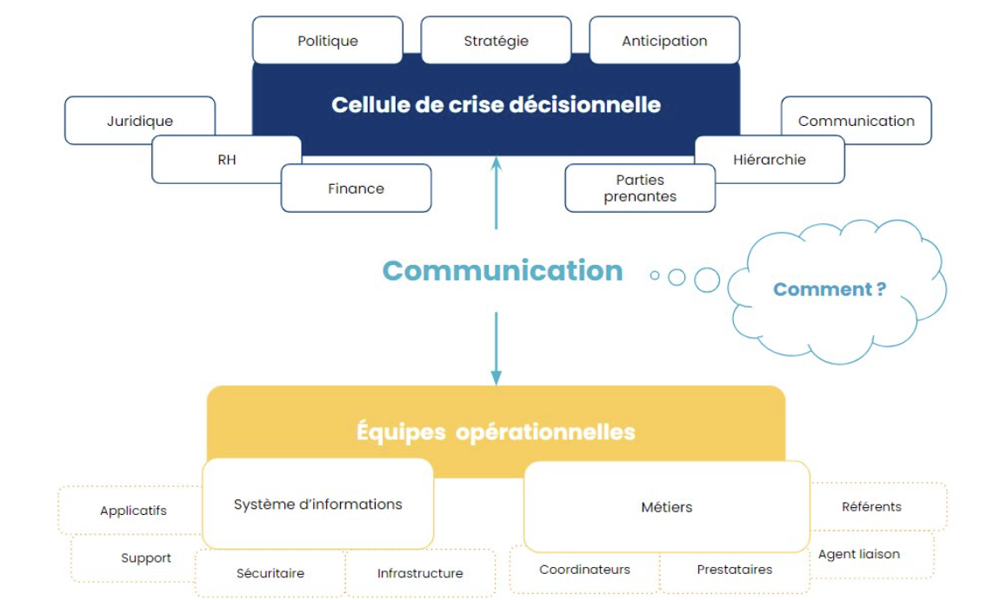

L'apparition de ce nouveau type de crise qu'est la
cyberattaque,
nous oblige à
repenser le schéma
organisationnel. Les enseignements des précédentes cyberattaques majeures nous ont permis d'aboutir au
schéma proposé ci-dessous.
Les schémas présents ci-dessous sont une proposition d'organisation, à
vous de
trouver l'organisation qui
convient.

La cellule de crise décisionnelle se place au niveau stratégique. Elle définit la
marche à suivre,
prend les décisions structurantes et cherche à assurer au maximum la continuité d'activité en s'appuyant
sur les recommandations et l'expertise des cellules opérationnelles.
Les cellules de crise dites "Opérationnelles" (Production, Support et DSI) sont
composées de membres
davantage terrains, experts techniques de leur domaine de compétence, aussi bien santé que DSI.
Les cellules peuvent se scinder en sous-cellules pour davantage d'agilité et de
souplesse.